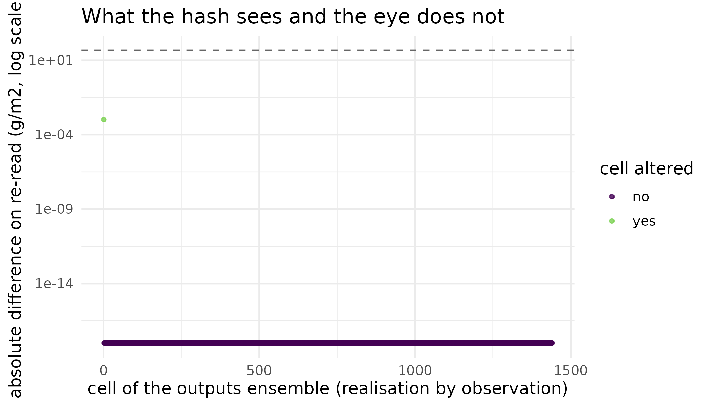

Why
I have calibrated my crop model and the posterior ensemble now has to go to somebody else: an agronomist who will price a decision on it, a colleague who will re-run it next season, a reviewer who will ask whether the numbers in my figure are the numbers the code produced. The question is: what exactly do I hand over, so that the person receiving it can read the ensemble without knowing anything about PESTO’s internals, and can check that what they are holding is the run I actually made? This vignette answers it with the object PESTO emits for the purpose, and shows what happens when a single number in the handed-over ensemble is altered.
What
A finished run wraps into a pesto_ensemble_manifest, an
S7 class carrying the parameter ensemble, the simulated outputs, the
assimilation context (weights and target observations), the seed, the
method, the lambda schedule, the failure rate, provenance strings, and a
SHA-256 hash over the data. It is a versioned data contract,
not a convenience wrapper: PESTO owns it as the orchestra’s C2 contract,
and consuming members read it through the four verbs below rather than
through PESTO’s list internals.
as_manifest()
builds one from a run. write_manifest()
serialises it as a YAML entry plus sidecar files, in one of three
formats whose integrity contract differs. read_manifest() reads
it back. verify_manifest()
recomputes the hash from what is on disk and reports whether it matches
the hash the YAML records. A consumer’s obligation is to call
verify_manifest() before trusting anything else, and the
full producer and consumer obligations are written out as a standalone
format specification in inst/manifest_contract.md.
as_manifest() also has a method for pesto_abstention(),
PESTO’s typed decline, so a run that a reliability gate refused still
produces a record rather than nothing at all.
Do
A run worth handing over
The run below is the synthetic crop-growth inversion from Your first inversion: from a season of measurements to a posterior: three growth parameters, twelve noisy biomass measurements, one hundred and twenty realisations, eight smoother iterations. It is reproduced here so the handover has something real to carry.
set.seed(20260902L)
vec_times <- seq(0, 120, by = 10)
vec_days <- vec_times[-1L]
crop <- crop_growth_forward_model(times = vec_times)
theta_true <- c(r = 0.065, b_max = 1450, b0 = 18)
mat_true <- matrix(theta_true, nrow = 1L,
dimnames = list(NULL, names(theta_true)))
vec_biomass <- as.numeric(pesto_evaluate(crop, mat_true))
obs_sd <- 45
y_obs <- vec_biomass + rnorm(length(vec_biomass), sd = obs_sd)
names(y_obs) <- paste0("t", seq_along(y_obs))
s1_real <- 120L
prior <- cbind(
r = runif(s1_real, 0.02, 0.12),
b_max = runif(s1_real, 900, 2000),
b0 = runif(s1_real, 5, 60)
)
fit <- pesto_ies_callback(
forward_model = crop,
prior_ensemble = prior,
obs = y_obs,
obs_sd = obs_sd,
noptmax = 8L,
seed = 20260902L,
verbose = FALSE
)Wrapping it
man <- as_manifest(fit, seed = 20260902L, apsim_version = NA_character_)
man
#> <pesto_ensemble_manifest> schema 1.1.0
#> run_id : ies_callback_20260902_081141_63d08ddc
#> method : ies_callback (noptmax=8)
#> ensemble : 120 realisations x 3 parameters | 12 observations
#> failure rate : 1.20%
#> pesto version : 0.10.1 apsim: NA
#> timestamp : 2026-09-02T08:11:41+0000
#> data hash : sha256:86b1bf4cdfb541f322a3b2acb7dd01af92f7b7a6a0b3f31c5fab6fe2ae122658Every slot is reachable through the standard S7 accessor, which is what a consumer uses instead of reaching into a list:
man@run_id
#> [1] "ies_callback_20260902_081141_63d08ddc"
man@schema_version
#> [1] "1.1.0"
man@data_hash
#> [1] "sha256:86b1bf4cdfb541f322a3b2acb7dd01af92f7b7a6a0b3f31c5fab6fe2ae122658"
man@failure_rate
#> [1] 0.01203704
head(man@params, 3L)
#> real_name r b_max b0
#> 1 real_1 0.07241749 1406.145 13.27327
#> 2 real_2 0.06876668 1392.795 19.16421
#> 3 real_3 0.06859347 1424.358 17.24296| Slot | What a consumer reads it for | Value |
|---|---|---|
| schema_version | which version of the contract this record obeys | 1.1.0 |
| method | which algorithm produced the ensemble | ies_callback |
| noptmax | how many assimilation steps were taken | 8 |
| seed | the seed that reproduces the run | 20260902 |
| failure_rate | the fraction of forward evaluations that returned nothing | 0.0120 |
| params | the posterior parameter ensemble | 120 x 3 |
| outputs | the simulated outputs matching those parameters | 120 x 12 |
| obs_target | the observations the ensemble was conditioned on | 12 values |
| weights | the observation weights, one over the observation SD | 12 values |
| data_hash | the integrity check over all of the above | sha256:86b1bf4cdfb541f… |
Writing, reading, verifying
write_manifest() emits the YAML entry plus three RDS
sidecars, one for the parameter ensemble, one for the outputs, and one
for the assimilation context. RDS rather than CSV, because IEEE 754
doubles round-trip bit-exactly through it and the SHA-256 check would
otherwise trip on formatter precision loss alone.
dir_run <- tempfile("pesto_manifest_")
dir.create(dir_run)
vec_paths <- write_manifest(man, file.path(dir_run, "wagga_2026_run01.yaml"))
basename(vec_paths)
#> [1] "wagga_2026_run01.yaml" "wagga_2026_run01_params.rds"
#> [3] "wagga_2026_run01_outputs.rds" "wagga_2026_run01_assim.rds"
man_read <- read_manifest(file.path(dir_run, "wagga_2026_run01.yaml"))
verify_manifest(man_read)$ok
#> [1] TRUEThe YAML entry is the human-readable front door; the first lines carry the identity and provenance a reader wants before opening anything else:
cat(paste(
readLines(file.path(dir_run, "wagga_2026_run01.yaml"))[seq_len(14L)],
collapse = "\n"
))
#> schema_version: 1.1.0
#> run_id: ies_callback_20260902_081141_63d08ddc
#> data_hash: sha256:86b1bf4cdfb541f322a3b2acb7dd01af92f7b7a6a0b3f31c5fab6fe2ae122658
#> format: rds
#> integrity: verifiable
#> obs_schema: ~
#> artefacts:
#> params: wagga_2026_run01_params.rds
#> outputs: wagga_2026_run01_outputs.rds
#> assim: wagga_2026_run01_assim.rds
#> seed: 20260902
#> fidelity: ~
#> apsim_version: ~
#> pesto_version: 0.10.1Three formats, three integrity contracts
Some handovers need a file a collaborator can open in a spreadsheet.
format = "both" writes the CSV alongside the RDS: the hash
stays bound to the RDS, so integrity is preserved, and the YAML records
the CSV paths under a separate inspection_csv: block that a
consumer can ignore.
dir_both <- tempfile("pesto_manifest_csv_")
dir.create(dir_both)
vec_paths_both <- write_manifest(
man, file.path(dir_both, "wagga_2026_run01.yaml"), format = "both"
)
basename(vec_paths_both)
#> [1] "wagga_2026_run01.yaml"
#> [2] "wagga_2026_run01_params.rds"
#> [3] "wagga_2026_run01_outputs.rds"
#> [4] "wagga_2026_run01_assim.rds"
#> [5] "wagga_2026_run01_params_inspection.csv"
#> [6] "wagga_2026_run01_outputs_inspection.csv"
#> [7] "wagga_2026_run01_assim_inspection.csv"format = "csv_unverified" is the one-way export for an
analyst who will never load it back into R. It writes CSV sidecars only,
records integrity: not_verifiable in the YAML, and
verify_manifest() then returns NA rather than
a spurious FALSE, because CSV formatter precision loss of
about one unit in the last place is enough on its own to move the hash.
The mode is named the way it is so the weaker contract is visible at
every call site.
dir_export <- tempfile("pesto_manifest_unverified_")
dir.create(dir_export)
write_manifest(man, file.path(dir_export, "snapshot.yaml"),
format = "csv_unverified")
man_export <- read_manifest(file.path(dir_export, "snapshot.yaml"))
verify_manifest(man_export)$ok
#> [1] NA
verify_manifest(man_export)$message
#> [1] "manifest format is 'csv_unverified' (integrity: not_verifiable); bit-exact hash verification is not possible from CSV sidecars (formatter precision loss). Re-write with format = 'rds' or 'both' for verifiable integrity."| Format | Sidecars | YAML integrity field | verify_manifest()$ok |
|---|---|---|---|
| rds (default) | RDS only | verifiable | TRUE |
| both | RDS plus inspection CSV | verifiable | TRUE |
| csv_unverified | CSV only | not_verifiable | NA |
What tampering looks like
The point of the hash is the case nobody notices: a downstream tool re-saves the outputs sidecar after an accidental edit or a partial overwrite. Below, one cell of the outputs ensemble is moved by 0.001 g/m2, far below the measurement noise the run was conditioned on, and the file is written back.
path_outputs <- file.path(dir_run, "wagga_2026_run01_outputs.rds")
tab_outputs <- readRDS(path_outputs)
val_before <- tab_outputs[1L, 2L]
tab_outputs[1L, 2L] <- tab_outputs[1L, 2L] + 1e-3
saveRDS(tab_outputs, path_outputs, version = 3L)
man_tampered <- read_manifest(file.path(dir_run, "wagga_2026_run01.yaml"))
res_verify <- verify_manifest(man_tampered)
res_verify$ok
#> [1] FALSE
tab_orig <- as.matrix(man@outputs[, -1L])
tab_seen <- as.matrix(man_tampered@outputs[, -1L])
mean_shift <- abs(mean(tab_seen[, 1L], na.rm = TRUE) -
mean(tab_orig[, 1L], na.rm = TRUE))
signif(mean_shift, 3L)
#> [1] 8.47e-06
tab_diff <- data.table::data.table(
cell = seq_len(length(tab_orig)),
delta = as.numeric(abs(tab_seen - tab_orig))
)
tab_diff <- tab_diff[!is.na(delta)]
tab_diff[, altered := delta > 0]
ggplot2::ggplot(
tab_diff, ggplot2::aes(x = cell, y = pmax(delta, 1e-18), colour = altered)
) +
ggplot2::geom_point(size = 1.1, alpha = 0.8) +
ggplot2::geom_hline(yintercept = obs_sd, linetype = "dashed",
colour = "grey40") +
ggplot2::scale_y_log10() +
ggplot2::scale_colour_viridis_d(
name = "cell altered", end = 0.8, labels = c("no", "yes")
) +
ggplot2::labs(
x = "cell of the outputs ensemble (realisation by observation)",
y = "absolute difference on re-read (g/m2, log scale)",
title = "What the hash sees and the eye does not"
) +
ggplot2::theme_minimal(base_size = 12)
Cell-by-cell absolute difference between the ensemble written to disk and the ensemble read back after one value was altered. Every cell but one is identical to the last bit; the single altered cell sits at 0.001 g/m2, far below anything an ensemble summary would move. The dashed line marks the measurement noise the run was conditioned on.
verify_manifest() returns the stored and the recomputed
hash side by side, so a consumer can fail fast and say exactly what
diverged rather than reporting a vague mismatch:
A run that declined to happen
Not every call returns an ensemble. PESTO’s reliability gates return
a typed pesto_abstention() instead of an error or a
half-populated result, and the manifest has a method for it: an
empty-payload record whose summary slot carries the
decline. A consumer therefore sees a typed refusal in the same place it
would have seen a posterior, rather than a missing file.
mat_par_off <- matrix(rnorm(30L * 12L), 30L, 12L)
mat_obs_off <- matrix(rnorm(30L * 8L), 30L, 8L)
res_off <- pesto_surrogate_ies(
par_ensemble = mat_par_off,
obs_ensemble = mat_obs_off,
obs_target = rnorm(8L),
weights = rep(1, 8L),
parcov_inv = rep(1, 12L)
)
is_pesto_abstention(res_off)
#> [1] TRUE
res_off
#> $reason
#> [1] "surrogate_off_design"
#>
#> $detail
#> [1] "surrogate training regime is unfavourable: n_train = 30 for n_params = 12 (ratio 2.50 < the check_surrogate_regime() default floor of 5)."
#>
#> $diagnostics
#> $diagnostics$n_train
#> [1] 30
#>
#> $diagnostics$n_params
#> [1] 12
#>
#>
#> $scope
#> [1] "call"
#>
#> $abstained
#> [1] TRUE
#>
#> attr(,"class")
#> [1] "pesto_abstention"
man_declined <- as_manifest(res_off)
dim(man_declined@params)
#> [1] 0 1
man_declined@summary$abstained
#> [1] TRUE
man_declined@summary$reason
#> [1] "surrogate_off_design"
dir_declined <- tempfile("pesto_manifest_declined_")
dir.create(dir_declined)
write_manifest(man_declined, file.path(dir_declined, "declined.yaml"))
man_declined_read <- read_manifest(file.path(dir_declined, "declined.yaml"))
man_declined_read@summary$reason
#> [1] "surrogate_off_design"
verify_manifest(man_declined_read)$ok
#> [1] TRUEWhat a conformant consumer does
A consumer reads the YAML with read_manifest(), calls
verify_manifest() before touching anything, refuses on
integrity: not_verifiable, on a summary that
reports an abstention, or on a failure_rate above whatever
it is willing to tolerate, branches on schema_version for
forward compatibility, and then works with the typed slots. It threads
man@data_hash and man@run_id into its own
provenance so the lineage closes. The short function below is that whole
obligation:
consume <- function(path, max_failure = 0.05) {
m <- read_manifest(path)
v <- verify_manifest(m)
if (isTRUE(is.na(v$ok))) {
return("declined: integrity not verifiable")
}
if (!isTRUE(v$ok)) {
return("declined: hash mismatch")
}
if (isTRUE(m@summary$abstained)) {
return(paste0("declined: producer abstained (", m@summary$reason, ")"))
}
if (m@failure_rate > max_failure) {
return("declined: failure rate above tolerance")
}
paste0("accepted: ", nrow(m@params), " realisations, run ", m@run_id)
}
consume(file.path(dir_both, "wagga_2026_run01.yaml"))
#> [1] "accepted: 120 realisations, run ies_callback_20260902_081141_63d08ddc"
consume(file.path(dir_export, "snapshot.yaml"))
#> [1] "declined: integrity not verifiable"
consume(file.path(dir_declined, "declined.yaml"))
#> [1] "declined: producer abstained (surrogate_off_design)"
consume(file.path(dir_run, "wagga_2026_run01.yaml"))
#> [1] "declined: hash mismatch"Read
The handover works, and it works in both directions. Writing the run produced 4 files: one YAML entry and three sidecars. Reading them back and recomputing the hash returned TRUE, so the ensemble a colleague opens is bit-for-bit the ensemble that came out of the smoother. The record carries 120 realisations of 3 parameters against 12 target observations, and a failure rate of 0.012, which is the fraction of forward evaluations that returned nothing during the run and is exactly the kind of thing a consumer should be allowed to refuse on.
The tamper case is the one that matters. Moving one value by 0.001
g/m2 shifts the ensemble mean of that observation column by 0.0000085
g/m2, which is nothing at all beside the 45 g/m2 of measurement noise,
and the figure shows why no summary statistic would ever raise it: every
other cell is identical to the last bit, and the altered one sits 4.7
orders of magnitude below the noise floor. The hash sees it regardless,
and verify_manifest() returns FALSE with both hashes
attached so the consumer can name what diverged. That asymmetry is the
whole argument for hashing the payload rather than checking it by
eye.
The three formats are three different promises, and the table above
states them plainly: the default RDS mode and the both mode
are verifiable, and csv_unverified is not, returning NA
from verify_manifest() rather than a false negative. The
refusal path closes the set. The off-design surrogate call returned a
typed abstention with reason ‘surrogate_off_design’, the manifest built
from it carries a zero-row parameter payload and that same reason in its
summary slot, and the reason survives the write and the
read. The four consume() calls at the end walk exactly
those four outcomes: accepted, declined for unverifiable integrity,
declined because the producer abstained, and declined because the file
on disk no longer matches its hash.
Limits
This vignette shows the record and the check, not the science: the
manifest guarantees that an ensemble is the one that was produced, and
says nothing whatever about whether the ensemble is any good. A
hash-verified posterior from a badly specified likelihood is a
hash-verified wrong answer, and the calibration questions belong to
Wiring your own simulator into PESTO and My posterior looks
too confident: is the ensemble collapsing?. The integrity check
covers the payload the hash is computed over, which is the parameter
ensemble, the outputs, the weights, the targets and the seed; it does
not cover the optional obs_schema descriptor, whose
correspondence between column names and physical quantities is
established by a second, independent record that agrees on units rather
than by a self-hash. Nor does the hash make a run reproducible on its
own: it records the seed, the method, the iteration count and the lambda
schedule, but re-running a calibration also needs the forward model, and
for a simulator-backed run that means the same simulator version on the
far end. The tamper demonstration alters one cell deliberately, so it
shows detection, not the frequency of accidental corruption in practice,
which this vignette makes no claim about.
What to read next
Your first inversion: from a season of measurements to a
posterior is where the run wrapped above comes from, and is the
shortest route into the smoother itself. Wiring your own simulator
into PESTO covers the forward-model contract on the producing side,
including the failure handling that sets the failure_rate
slot read here. Can PESTO recover APSIM’s own parameters? emits
a manifest at the end of a full simulator-backed calibration, which is
the realistic version of this handover. When can a surrogate stand
in for the simulator? is where the typed abstention used above
comes from, and states the regime that triggers it.
Reproduce
Seed 20260902 sets the synthetic season, the prior draw
and the off-design surrogate demonstration, and is passed to
pesto_ies_callback(), which records it on the run and
carries it into the manifest’s seed slot. All files are
written under tempfile() and removed at the end of the
vignette. Package versions follow.
sessionInfo()
#> R version 4.6.1 (2026-06-24)
#> Platform: x86_64-pc-linux-gnu
#> Running under: Ubuntu 24.04.4 LTS
#>
#> Matrix products: default
#> BLAS: /usr/lib/x86_64-linux-gnu/openblas-pthread/libblas.so.3
#> LAPACK: /usr/lib/x86_64-linux-gnu/openblas-pthread/libopenblasp-r0.3.26.so; LAPACK version 3.12.0
#>
#> locale:
#> [1] LC_CTYPE=C.UTF-8 LC_NUMERIC=C LC_TIME=C.UTF-8
#> [4] LC_COLLATE=C.UTF-8 LC_MONETARY=C.UTF-8 LC_MESSAGES=C.UTF-8
#> [7] LC_PAPER=C.UTF-8 LC_NAME=C LC_ADDRESS=C
#> [10] LC_TELEPHONE=C LC_MEASUREMENT=C.UTF-8 LC_IDENTIFICATION=C
#>
#> time zone: UTC
#> tzcode source: system (glibc)
#>
#> attached base packages:
#> [1] stats graphics grDevices utils datasets methods base
#>
#> other attached packages:
#> [1] PESTO_0.10.1
#>
#> loaded via a namespace (and not attached):
#> [1] vctrs_0.7.3 cli_3.6.6 knitr_1.51
#> [4] rlang_1.3.0 xfun_0.60 otel_0.2.0
#> [7] S7_0.2.2 textshaping_1.0.5 jsonlite_2.0.0
#> [10] data.table_1.18.6.1 labeling_0.4.3 glue_1.8.1
#> [13] htmltools_0.5.9 ragg_1.5.2 sass_0.4.10
#> [16] scales_1.4.0 rmarkdown_2.32 grid_4.6.1
#> [19] evaluate_1.0.5 jquerylib_0.1.4 fastmap_1.2.0
#> [22] yaml_2.3.12 lifecycle_1.0.5 compiler_4.6.1
#> [25] RColorBrewer_1.1-3 fs_2.1.0 Rcpp_1.1.2
#> [28] farver_2.1.2 systemfonts_1.3.2 digest_0.6.39
#> [31] viridisLite_0.4.3 R6_2.6.1 bslib_0.12.0
#> [34] withr_3.0.3 gtable_0.3.6 tools_4.6.1
#> [37] pkgdown_2.2.1 ggplot2_4.0.3 cachem_1.1.0
#> [40] desc_1.4.3